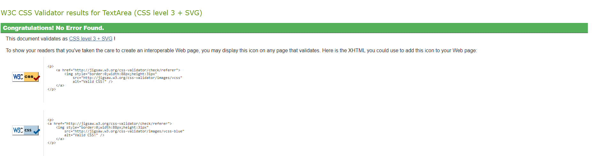

About the Experience
My experience of working on this project has been very intresting and in return I have learnt some valuable skills that has helped me in my self confidence. The biggest positive to take out of the whole experience is coming out with a product that will help me get good marks in the exam. On the negative side time consumption with limited experience sometimes made it really difficult.
The biggest positive to take out of the whole experience is coming out with a product that will help me get good marks in the exam. It is also a good feeling to see different things work togheter and how a single command can create anything from a small change something big.
The biggest negative for was the limited experince and effect of that on the progress. Making a simple syntax error would sometimes take hours to figure and trying to scroll through notes hindered the progress as well made a dent on the motivation to keep moving forward.
From start of the term to where I am know, i have learnt alot however, i do feel that my work could be much better than where it is right now. My intial designs were very basic for the website, but i did try to build on it slowly and hopefully the final product would be good.
Following are the screen shots for reports showing that my html and css code is valid.
